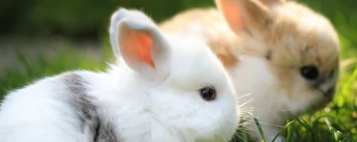
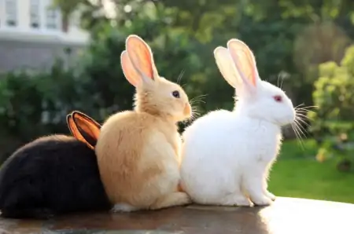
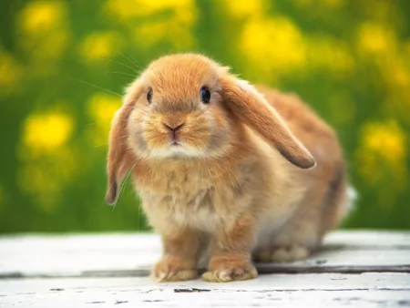

兔子打蔫不吃不喝得了什么病？兔子不吃不喝也不动怎么回事
兔子打蔫不吃不喝得了什么病？
兔子打蔫不吃不喝可能是得了口腔病，比如牙齿磨损、脱臼等。
这种情况下，兔子会因为咬合力不足而无法进食，主人可以先给兔子进行磨牙、口腔消毒。
如果牙齿磨损的非常厉害，那么需要带着兔子去看牙医。如果兔子患有鼻炎的话，就会导
致它呼吸不畅、精神状态不佳、食欲下降，主人可以通过喂食一些牧草、维持室内湿度来
进行调理，另外，还要对笼子进行消毒，平时也要保持笼子的干净，防止细菌增生。

兔子不吃不喝也不动怎么回事?
兔子不吃不喝也不动可能是兔子在休息。也有可能是它们的身体正处于亚健康的状态，
兔子对于环境的要求比较高，当环境温度低于15度或者高于30度的时候，就会降低活动量
。同时，食欲也会受到很大的影响。当气温过低的时候，兔子会像人类一样感觉到寒冷，
所以会躲起来减少活动，防止自身能量的消耗。这种情况下家养的兔子，主人需要给它们
提供额外的热源，并给它们提供一个比较舒适、温暖的窝。

欲知更多资讯
请点击百度跳转
不想点击文字
点击下列图片也可以哦！
